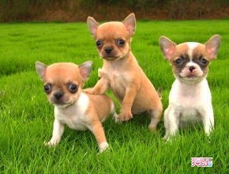

世界名犬
吉娃娃的介绍
吉娃娃是目前人们所知道的最古老的犬种之一，原产去美洲，和墨西哥的古老文明有
深厚而密切的关系，吉娃娃是属于的犬种最小型、优雅、警惕、动作迅速，以匀称
的体格和娇小的体型广受人们的喜爱。他们是相当受欢迎的狗狗，功用也非常广泛
他们是宗教的守护者，也是平民的好伴侣。上至贵族下至百姓，不分等级，不分
贵贱，吉娃娃是大家的好朋友。它不喜欢外来的同品种狗，有和梗类相似的特
点。精力充沛.。体型较小，适合家养。
吉娃娃
